Welcome to Examus

Ooops, nothing found!
-
1. Какая организация контролирует производство и эксплуатацию грузоподъемных машин общего назначения, работающих на земле?
Госгортехнадзор
-
2. Экскаваторы с оборудованием трамбовки представляет собой тяжелую плиту весом до ...
3 тонн.
-
3. Экскаваторы с оборудованием трамбовки производит число ударов до ...
15 в минуту.
-
4. У экскаваторов с оборудованием трамбовки высота подъема плиты до ...
2 метров.
-
5. У экскаваторов с оборудованием трамбовки глубина воздействия плиты доходят до ...
3 метров.
-
6. Индекс экскаватора ЭО – 3311 с канатом оборудованием мощностью ...
N = 37 кВт, масса 0,4 м³.
-
7. Что такой экскаватор непрерывного действия называют ...
землеройную машину, непрерывно разрабатывающую и одновременно транспортирующую грунт в отвал или транспортные средства.
-
8. Что такой бульдозер называют ...
гусеничный или колесный трактор с навешенным в переди отвалом, приспособленным для срезания и перемешения грунта на небольшие расстояния при разработке выемок и возведение насыпей из резервов, разравнивание грунта, расчистки площадей от мелького леса и т.д.
-
9. Что такой траншейный экскаватор называют ...
машину для рытья траншей под водопроводы, канализацию, электрические и телефонные кабели, ленточные фундаменты зданий, а оборудованные специальными откосниками - для рытья мелких каналов и водопроводных канав.
-
10. Что такой трактор называют ...
колесные или гусеничная машина предназначенная, для передвижения прицепных и навесных дорожных или других машин, орудия и буксирования различных прицепов.
-
11. Что такой одноковшовый экскаватор ...
Машина представляет собой самоходную землеройную машину периодического действия, при помощи ковша отделяет грунт от массива, перемешает его и укладывает в отвал или транспортные средства.
-
12. Что такое машина? ...
Машиной называют устройство, выполняющее механические движения для преобразования энергии, материалов и информации с целью замены или облегчения физического и умственного труда.
-
13. Что такое механизм? ...
Механизмами называют систему тел, предназначенную для преобразования движения одного или нескольких твердых тел в требуемые движения других тел.
-
14. Грузоподъёмные машины бывают? ...
домкраты, лебедки, краны, подъемники.
-
15. Основные виды подъемно транспортных машин? ...
грузоподъемные, транспортирующие, погрузочно - разгрузочные машины.
-
16. Как определяют степень измельчения? ...
Отношение среднего размера куска до измельчения D ср. к среднему размеру куска после измельчения d ср.
-
17. Как называется строительная машина? ...
Строительной машиной называют устройство, которое посредством механических движений преобразует размеры, форму, свойства или положение в пространстве строительных материалов, изделий и конструкций.
-
18. Что такое параметр? ...
Параметром называют количественную, реже - качественную характеристику какого - либо существенного признака машины.
-
19. По режиму рабочего процесса различают какие строительные машины? ...
машины цикличного и непрерывного действия.
-
20. По способности передвигаться различают какие строительные машины? ...
стационарные и передвижные.
-
21. Энергосиловое устройство, приводящее в движение машину называют? ...
Энергосиловое устройство, приводящее в движение машину называют?
-
22. Что такое трансмиссия? ...
Трансмиссии – это устройства, обеспечивающие передачу движения от силовой установки к исполнительным механизмам и рабочим органам машины.
-
23. Какие конвейеры относятся к конвейерам с гибким тяговым элементом? ...
Пластинчатые.
-
24. Какие конвейеры относятся к конвейерам без гибким тяговым элементом? ...
Винтовые.
-
25. Как называется измельчение? ...
Измельчением называют процесс разрушения твердого тела посредством воздействия на него внешних механических сил с целью уменьшения размеров кусков до заданной крупности и их дальнейшего использования.
-
26. Что из нижеперечисленного является Обязательными составными частями любой технологической, транспортирующей и грузоподъемной машины? ...
1 – привод, состоящий из силовой установки; 2 – передаточные устройства (трансмиссия); 3 – система управления; 4 – один или несколько рабочих органов; 5 – рама (несущие конструкции); 6 – ходовое устройство, соединенное с рамой машины, называемой в ряде случаев шасси? 1, 2, 3 и 4.
-
27. Как определяют производительность? ...
количеством продукции, произведенной машиной в единицу времени.
-
28. Какие типы трансмиссии применяются в современных строительных машинах? ...
все перечисленные типы.
-
29. Для чего применяются тормоза? ...
для регулирования скорости опускания груза или удержания груза на весу, для поглощения инерции движущихся масс (тележек, кранов, грузов), для изменения скорости отдельных узлов машин.
-
30. Сила тяги на ведущих колесах автомобиля определяется по формуле T = G * (f + i). Что такое i? ...
уклон пути.
-
31. Сила тяги на ведущих колесах автомобиля определяется по формуле T = G * (f + i). Что такое f? ...
коэффициент сопротивления движению.
-
32. Что такое грузоподъемные краны? ...
машины цикличного действия, предназначенные для подъема и перемещения в пространстве груза, удерживаемого грузозахватным органом.
-
33. Землеройные машины предназначаются для ...
отделения грунта от массива.
-
34. На монтажных работах применяют экскаватори с оборудованием:
С крановым оборудованием, С башенным краном
-
35. Классификация одноковшовых экскаваторов по типу движетелем.
Пневмоколесные, Гусеничные, Шагающие
-
36. Классификация одноковшовых экскаваторов по виду рабочего оборудования.
Прямая и обратная лопата, Драглайн и грейфер, Планировочный ковш и разгрузителей
-
37. Классификация одноковшовых экскаваторов по испалению рабочего оборудования.
Канатные (механические), Гидравлические, С телескопической стрелой
-
38. Классификация экскаваторов непрерывного действия перемещения рабочего органа с продельным копанием.
Цепной, роторный, Шнекароторный, двухроторный, Плужно роторный
-
39. Экскаваторы по типу ходового оборудования делятся:
На гусеничные, Пневмоколесные, На специальном шасси, На базе самоходный шасси
-
40. Экскаваторы по типу подвески рабочего оборудования различают:
Экскаваторы с гибкой подвеской, Экскаваторы с жесткой подвеской
-
41. Конструктивную массу экскаваторов входят:
Масса машины с рабочим оборудованием, Противовесом
-
42. По принципу действия какие машины различают?
циклического действия, непрерывного действия
-
43. По принципу подвижности какие машины различают?
Переносные, стационарные
-
44. Экскаваторы по типу привода различают:
Механическое, гидромеханическое, Гидравлическое, Электрическое, Смешанные
-
45. Экскаваторы по возможности вращения поворотной части (платформы) бывают:
Полноповоротные, врашающейся вокруг вертикальной оси на неограниченный угол, Неполноповоротные, с ограниченным углом вращения платформы
-
46. Основные виды грузоподъемных машин:
Домкраты, Лебедки, Краны, подъемники
-
47. Основные виды подъемно - транспортных машин:
Транспортирующие, Грузоподъемные, погрузочно - разгрузочные
-
48. По режиму рабочего процесса различают какие строительные машины?
циклического действия, непрерывного действия
-
49. По способности передвигаться различают какие строительные машины:
Стационарные, передвыжные
-
50. По типу ходовых устройств различают какие виды строительных машин:
гусеничные, пневмоколесные, рельсоколесные и специальные
-
51. Механические передачи по принципу работы делят на какие виды?
передачи трением, передачи зацеплением
-
52. Какие виды бывают механические передачи?
Ременные, Зубчатые, червячные
-
53. Какие виды соединений бывают?
Резьбовое, Сварочное, шпоночное
-
54. К основным видам транспортирующих машин какие машины относятся?
Конвейеры, Пневмотранспортные установки
-
55. Какие конвейеры относятся к конвейерам с гибким тяговым элементом?
Пластинчатые, Ленточные, Ковшовые
-
56. Какие конвейеры относятся к конвейерам без гибким тяговым элементом?
Вибрационные, Винтовые, Роликовые
-
57. Дробление подразделяют на:
Крупное, Среднее, мелькое
-
58. Помол подразделяют на:
Грубый, Тонкий, сверх тонкий
-
59. Дробильно - помольные машины классифицируют по крупности частиц конечного продукта на:
Дробилки, Мельницы
-
60. На какие типы краны разделяются по конструкции?
Мостовые, Козловые, башенные
-
61. Как условно различают виды измельчения в зависимости от крупности зерен готового продукта?
Дробление, Помол
-
62. Какие дробилки получили широкое распространение в строительстве?
Щековые, Валковые, конусные
-
63. Какие виды сортировки применяют при производстве строительных материалов?
механическую сортировку (грохочение), гидравлическую; в оздушную (сепарацию), магнитную сепарацию
-
64. Как по способу образования смесей классифицируются смесители?
Гравитационные, принудительного
-
65. Совокупность силового оборудования, трансмиссии и систем управления, обеспечивающих приведение в действие механизмов машины и рабочих органов:
Привод
-
66. Устройство, выполняющее механические движения для преобразования энергии, материалов и информации с целью замены или облегчения физического и умственного труда:
машина
-
67. Систему тел, предназначенную для преобразования движения одного или нескольких твердых тел в требуемые движения других тел называют:
механизмами
-
68. Отношение объема строительной продукции ко времени ее создания это:
Производительность
-
69. Домкрат?
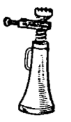
#
-
70. Лебёдка?
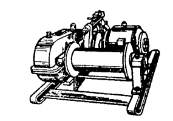
#
-
71. Тали?
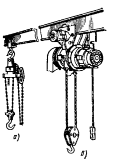
#
-
72. Мостовой кран?
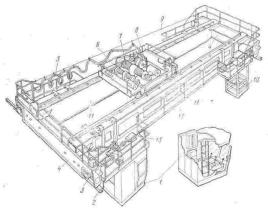
#
-
73. Козловой кран?
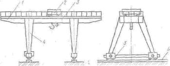
#
-
74. Кабельный кран?
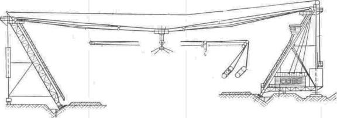
#
-
75. Раздавливание?
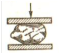
#
-
76. Истирание?
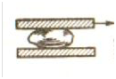
#
-
77. Удар?
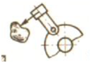
#
-
78. Крупное
от 80 до 200 мм
-
79. Среднее
от 20 до 80 мм
-
80. Мелкое
от 2 до 20 мм
-
81. Грубый
от 0,2 до 2 мм
-
82. Тонкий
0,01 до 0,2 мм
-
83. Сверхтонкий
менее 0,01 мм
-
84. Что такое мостовой кран?
мост, который опирается непосредственно на надземный крановый путь Мостовой кран
-
85. Что такое козловой кран?
мост, который опирается на крановый путь с помощью двух опорных стоек Козловой кран
-
86. Что такое башенный кран?
кран стрелового типа со стрелой, закрепленной в верхней части вертикально расположенной башни Башенный кран
-
87. Что такое стреловой самоходный кран?
консольную стрелу, установленную на полноповоротной раме стреловой самоходный кран
-
88. Что такое кабельный кран?
кран с несущими канатами, закрепленными на верхних концах мачт опорных стоек кабельный кран
-
89. Что такое мачтовый кран?
стационарный подъемный кран с независимым расположением металлоконструкций и механизмов мачтовый кран
-
90. Землеройные машины предназначаются для…
отделения грунта от массива
-
91. Землеройно - транспортные машины предназначаются для…
отделения грунта от массива и перемещения его
-
92. Машины для подготовительных и вспомогательных земляных работ предназначаются для…
расчистки территории, на которой должны производиться земляные работы, от кустарника, валунов, пней, предварительного рыхления грунтов повышенной плотности
-
93. Что такое бульдозер?
самоходная землеройно - транспортная машина в виде гусеничного трактора или колесного тягача с навешенным на него с помощью рамы или брусьев рабочим органом – отвалом Бульдозер
-
94. Что такое скрепер?
землеройно - транспортная машина циклического действия, предназначенная для послойного вырезания грунта с набором его в ковш, транспортирования набранного грунта и отсыпки его слоями или в отвал с частичным уплотнением ходовыми колесами или гусеницами Скрепер
-
95. Автогрейдер
Самоходная многофункциональная планировочно - профилировочная машина, основным рабочим органом которой служит полноповоротный грейдерный отвал с ножами, размещенный между передним и задним мостами пневмоколесного ходового оборудования
-
96. Прямая лопата
ковш экскаватора, используемый для копания грунта выше уровня стоянки экскаватора
-
97. Обратная лопата
ковш экскаватора, используемый для копания грунта ниже опорной поверхности самого экскаватора
-
98. Драглайн
ковш экскаватора с гибкой подвеской, используемый для копания грунта ниже опорной поверхности самого экскаватора
-
99. Грейфер
оборудование для рытья глубоких котлованов (колодцев) в малосвязных грунтах и для перегрузки сыпучих материалов
-
100. Крановое оборудование
оборудование для выполнения погрузочно - разгрузочных и строительно - монтажных работ
-
101. Строительная машина
строительной машиной называют устройство, которое посредством механических движений преобразует размеры, форму, свойства или положение в пространстве строительных материалов, изделий и конструкций
-
102. Производственная эксплуатация
производственной эксплуатацией называют состояние функционирования машины, в процессе которого она вырабатывает продукцию
-
103. Техническая эксплуатация
технической эксплуатацией называют мероприятия, обеспечивающие поддержание качества машин при их эксплуатации
-
104. Срок службы
сроком службы называют календарную продолжительность эксплуатации машины от ее начала или возобновления после ремонта до наступления предельного состояния
-
105. Параметр машины
параметром машины называют количественную, реже, качественную характеристику какого - либо существенного ее признака
-
106. Главные параметры
параметры называют главными параметры, которые в наибольшей мере определяют технологические возможности машины
-
107. Производительность
важнейшая выходная характеристика строительной машины
-
108. Как определяют производительность
количеством продукции, произведенной машиной в единицу времени
-
109. Что понимают под расчетной (теоретической, конструктивной) производительностью
производительность за 1 ч непрерывной работы при расчетных скоростях рабочих движений, расчетных нагрузках на рабочем органе и расчетных условиях работы
-
110. фрикционными
называются передачи, у которых движение от одного элемента к другому передается силами трения
-
111. ремёнными
называются передачи, у которых вращения от одного вала к другому, находящемуся на значительном расстоянии, передается посредством двух шкивов, на которые надет бесконечный ремень
-
112. зубчатимы
называются передачи, у которых вращения передается между параллельными, перекрещивающимися и пересекающимися осями посредством зубчатого зацепления
-
113. Для забывки свай на экскаватор устанавливается
копер
-
114. Для рыхления мерзлого грунта на экскаватор устанавливается
гидромолот
-
115. Для рытья колодцев, уских и глубоких котлованов применяют экскаваторы с
грейфером
-
116. Какие тракторы изготовляют с передним и задним расположением двигателя с фрикционном и планетарном механизм поворота?
гусеничные
-
117. Какие тракторы выпускают с дизелями, с механическими и гидромеханическими трансмиссиями, с передними управляемими колесами?
колесные
-
118. Какое рабочие оборудование для разработки грунтов выше ни ниже уровня стоянки экскаватора, для погрузки и разгрузки сыпучих материалов
грейфер
-
119. Какая организация контролирует производство и эксплуатацию грузоподъемных машин общего назначения, работающих на земле?
Госгортехнадзор
-
120. Устройство выполняющее механические движения для преобразования энергии, материалов и информации с целью замены или облегчения физического и умственного труда называют
Машина
-
121. Систему тел, предназначенную для преобразования движения одного или нескольких твердых тел в требуемые движения других тел называют:
Механизмами, механизм
-
122. Отношение среднего размера куска до измельчения D ср. к среднему размеру куска после измельчения d ср. называют
степенью измельчения
-
123. Устройство, которое посредством механических движений преобразует размеры, форму, свойства или положение в пространстве строительных материалов, изделий и конструкций называют.....
Строительной машиной
-
124. Количественную, реже - качественную характеристику какого - либо существенного признака машины называют.....
Параметром
-
125. количество продукции, произведенной машиной в единицу времени называют.........
Производительность
-
126. Энергосиловое устройство, приводящее в движение машину называют
Привод
-
127. Устройства, обеспечивающие передачу движения от силовой установки к исполнительным механизмам и рабочим органам машины называют.....
Трансмиссия
-
128. Вал, передающий мощность, называется
Ведущим
-
129. Вал воспринимающий ее называют
Ведомым
-
130. Какой из перечисленных конвейеров относятся к конвейерам с гибким тяговым органом? ленточные, винтовые, инерционные
ленточные
-
131. Какой из перечисленных конвейеров относятся к конвейерам без гибкого тягового органа? ленточные, винтовые, пластинчатые
винтовые
-
132. В зависимости от крупности кусков измельченного материала процесс измельчения называют
Дробление
-
133. Размер кусков определяют...
Измерением
-
134. Ковш экскаватора с гибкой подвеской, используемый для копания грунта ниже опорной поверхности самого экскаватора называется
Драглайн
-
135. Оборудование для рытья глубоких котлованов (колодцев) в малосвязных грунтах и для перегрузки сыпучих материалов называется
Грейфер
-
136. Основным параметром асфальтоукладчика является
производительность
-
137. Асфальтобетонные смесители какого типа имеют все агрегаты расположенные по площади:
Партерные
-
138. К землеройно - транспортных машинам, оборудованным ковшовым рабочим органом относят
скреперы
-
139. Основным параметром одноковшовых погрузчиков является
грузоподъемность
-
140. Экскаваторы по числу установленных двигателей сколько типов бывает
2
-
141. Экскаваторы по возможности вращения поворотной части (платформы) сколько типов бывает
4
-
142. Экскаваторы по типу ходового оборудования делятся на сколько групп
4
-
143. Рабочий процесс экскаватора состоит из сколько циклов
2
-
144. Экскаваторы по типу подвески рабочего оборудования делятся на сколько групп
2
-
145. Рабочий цикл состоит из сколько основных операции
5
-
146. Запаса прочности канатов для подъема людей
9
-
147. Запас прочности канатов для подъема груза
8
-
148. Запас прочности грузовых цепей
8
-
149. По принципу действия различают сколько машины?
2
-
150. По степени подвижности сколько бывают машины?
2
-
151. Сколько механизмов у мостовых кранов?
3
-
152. Сколько механизмов у козловых кранов?
3
-
153. Сколько механизмов у башенных кранов?
5
-
154. Сколько механизмов у автомобильных кранов?
3
-
155. Сколько видов подъемно - транспортных машин?
3
-
156. Сколько видов бывают у грузоподъемных машин?
4
-
157. Если оношение среднего размера куска до измельчения D ср=1000 к среднему размеру куска после измельчения d ср=200 сколько будет равно степень измельчения?
5
-
158. Если оношение среднего размера куска до измельчения D ср=800 к среднему размеру куска после измельчения d ср=200 сколько будет равно степень измельчения?
4
-
159. Если отношение среднего размера куска до измельчения D ср=1400 к среднему размеру куска после измельчения d ср=200 сколько будет равно степень измельчения?
7
-
160. По режиму рабочего процесса различают сколько видов строительных машин?
2
-
161. По способности передвигаться различают сколько видов у строительных машин?
2
-
162. По типу ходовых устройств различают сколько видов строительных машин?
4
-
163. Сколько выдов различают грузоподъемных машин?
4
-
164. Сколько выдов бывают подъемно - транспортные машины?
3
-
165. Определите степень редуктора?
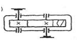
1 #
-
166. Определите степень редуктора?
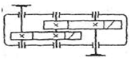
2 #
-
167. Определите степень редуктора?
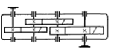
3 #
-
168. Ременная передача
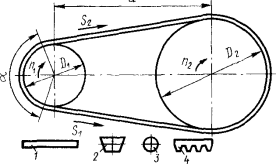
#
-
169. Червячная передача
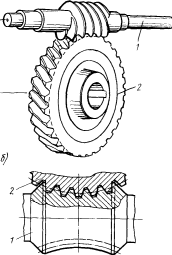
#
-
170. Цепная передача
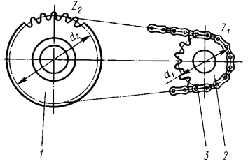
#